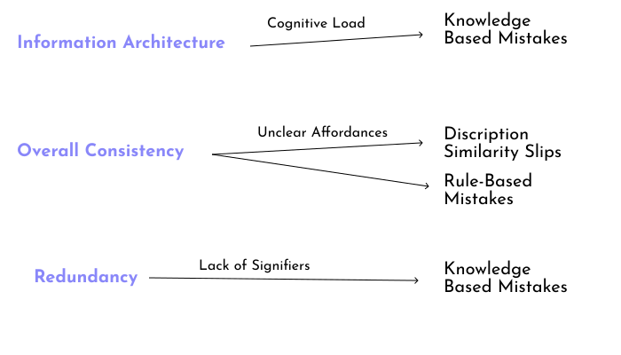
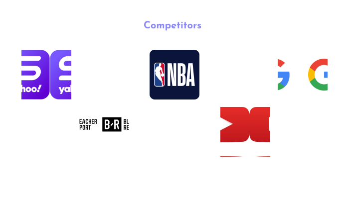

As a full disclaimer, this was a class project, and I am in no way intending to claim credit over the entire project. I contributed on most pieces of work, and for sake of clarity, will remove or mark all work that I had nothing to do with.
Preview of Redesign:

Team: Ruben Leura, Elysia Mac, Lannie Tran, Khandker Hasan, Kiran Aranha
Tools: Figma, Google Docs, Google Forms
Role: UI Designer, UX Researcher, UX Designer
Timeline: 3 weeks
ESPN is a sports network that broadcasts news, scores and statistics to millions of people worldwide. Keeping the context of the application in mind, a sports application’s purpose is to cater to all of the popular sports and aims to capture many functionalities in one centralized location. The relative advantage of this is that you don’t need many different applications to view news and scores; however there is the constraint of overall clutter and data sprawl that comes with having so much information in one place. This yielded our initial observation that there was a lot of clutter on the home pages, and it can be frustrating to go through the application and look for something, because there is a lot of distracting colors and buttons to look at, which can tie into cognitive load, and how much a user can process before they start to deteriorate in performance.
To understand some crucial errors and possible pain points regarding the application we first conducted some user testing with the current application, and then defined the observed errors.
The full results are linked.
We had the users go through some basic tasks:
These overall tasks aimed to put users through common flows of information, and see where they struggled. Following the tasks, we asked them some questions on their user experience, and what they noticed and how it made them felt. Some notable quotes are shown below.


This helped us understand some core functionalities that needed work and to nail down some pain points. We found that there were 3 consistent problems that were reoccuring:

The combination of the 3 negatively affected the overall user experience, and lowered engagement with each major function of the application, as highlighted by the navbar. The core problems are expanded on below:

It is important to classify and define the errors that we encountered, and find the root cause of this error. This would allow us to properly alleviate the tension caused by attacking it at the cause.
One significant part of every designer's job is negotiating through the sea of tradeoffs that are implicit in every design. Finding that sweet spot is where a good design can turn to a great design, so we made sure to be aware of the tradeoffs to guide our redesign. The two that we chose are highlighted below:
After ranking them subjectively, we plotted them according to their rankings, using a design space chart.
To understand how these two factors influence a design, we turned to some key competitors, and analyzed the two factors, giving subjective rankings. The Competitors are as follows:
There is always going to be an inverse relationship with the amount of information the user can feasibly digest, and the cognitive load. The more information, the harder it is for the user to be truly engaged with the product.

We defined efficiency as the number of clicks it takes to get to a desired object of information, however, a path that is the most "efficient" might also be too confusing to the user, especially if it diverges from industry standards in signifiers.

We started by guiding our thoughts about the pain points into a lo-fi sketch:

*Lo-Fi Sketch was done by Lannie Tran
The biggest thing to note here was the redefined navbar. We wanted to consolidate the information being presented, and seperate the way that the information flows in a way that is more aligned to what the user truly wants. Our data found that users mostly cared about their teams news, and the scores from their teams, and the other sports news was intrusive and detracted from their overall experience. To highlight this, we split up the information architecture as follows.

With the general redesign in mind, and an understanding of the trade-offs implicit in the creation of a new design, we started Prototyping collaboratively on Figma. Ruben Leura, Lannie Tran, Elysia Mac and I were primarily tasked with this, with Ruben and I having more experience with the tools and leading the effort.
An Embedded version of the prototype is shown below:
Some of the important aspects to note is the re-imagined navbar, the new information architecture that places user need first, and the increased user engagement through personalization.
A gif version for ease of viewing is shown:
This project was extremely helpful in allowing my prototyping skills to develop and get a good feel of working in a team setting, and how that can influence the design process.
The main constraints with this project has to be time, and that is why Independantly I will start testing the new designs feasibility against the old one, and see if there is any improvement in the defined errors that we encountered before.
Deliverables: New Information Architecture, Navbar
Back to Portfolio